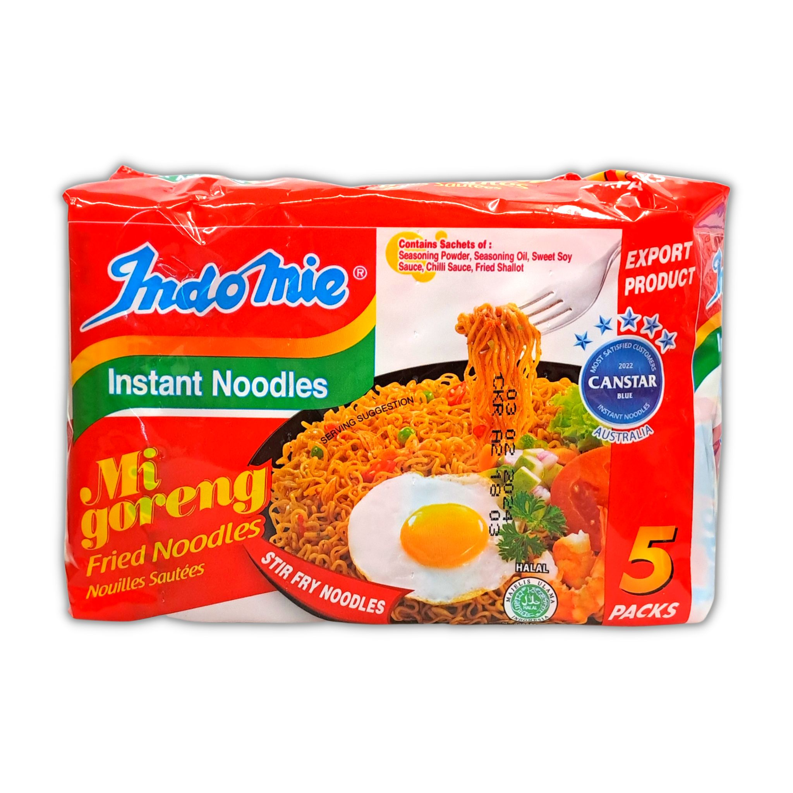

Noodles

Description :
This is a recipe for instant noodles by me. It takes a total 5 mins and serves 1 person.
Ingredients:
- mie goreng packet
- water
- Optional: 1 egg
Steps:
- Boil water until water is boiling
- Add noodles to a bowl and pour hot water onto noodles, letting them cook in the water for atleast 2 mins
- Add seasoning packets to the noodles and mix until thourghly mixed
- optional: Cook an egg and add it to the noodles
- Enjoy
home